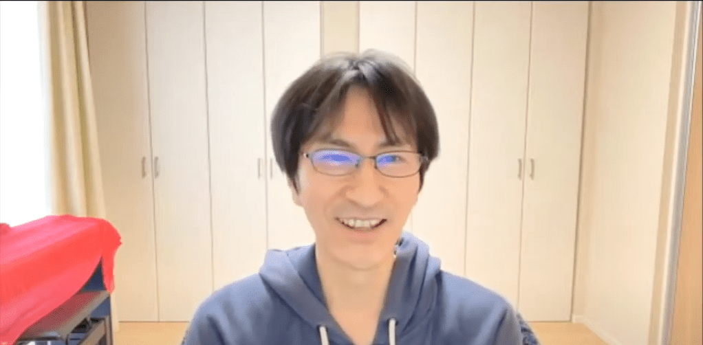

2ヶ月コンサルティングの感想です。

クライアントさんの成果がどんどん上がってます
燃え尽き症候群のように疲れ果てていた自分が、今は、自分の時間や家族との時間を罪悪感なくとれるようになります。ずっと我慢させていた子供との旅行にいくことができました。
経営コンサルタント 下山さん
根拠：UTAGE BE-01_2ヶ月コンサル（C0KpHEpunK2k）

コンサルティングの感想に掲載した写真ここでご紹介しているのはコンサルティングや講座の感想です。経営アプリの利用者の声はまだ掲載していません。
こちらは、僕の経営コンサルティングと講座についていただいた声ですので、経営アプリを使った感想とは分けてご覧ください。
受けた商品はそれぞれに表示しています。経営アプリを使った成果ではありません。
2ヶ月コンサルティングの感想です。
クライアントさんの成果がどんどん上がってます
燃え尽き症候群のように疲れ果てていた自分が、今は、自分の時間や家族との時間を罪悪感なくとれるようになります。ずっと我慢させていた子供との旅行にいくことができました。
経営コンサルタント 下山さん
新スタイルコンサルティングの感想です。
価格と仕事の進め方を見直した、福本さんの感想です。
7年間続けた個人事業主から会社を立ち上げてもうすぐ1年、私にとってこの1年は、脳みそのジェットコースターのようでした。そして、こんなに利益が出るなんて… 西田さんの言葉に、「個人事業主は趣味、アマチュアだ」的な言葉があります。その言葉にショックを受けて、「趣味、アマチュアで終わってはいけない、私はプロの経営者になるのだ」と決断してすぐに会社立ち上げをしました。同時にコンサルティングもお願いし会計も見ていただく事にしました。 月に2回のスカイプコンサルは、毎回、脳みそがでんぐりかえるような衝撃の連続でした。私にとってあまりにも当たり前で、疑問にも思った事がない盲点をスパッと突かれるのです。 言われて初めて、ああ、私は土方をずっと続けようとしていた… 時間が絶対に必要だと言いながら、時間がなくなる方法を選んでいた… 安くしないと売れないと思い込んでいた… そして提案してくださった事を恐る恐る実行してみたら、売上が驚くほど上がったのです。お陰様でこの1年、過去最高の売り上げ記録を何度か出しました。しかも利益率は55%から80%に改善したのです。 個人事業主だった時には、超えられない年商の金額がありました。どんなに努力してもそれ以上伸びませんでした。お金のない主婦層がターゲットですからしかたがないのかもしれない、と思っていました。 西田さんのお陰で、お客様を全く変えずに、新規も入れずに、商品の平均単価を10倍以上にして、売り上げは1.5倍ほど、利益は…凄く上がりました。この結果に、自分でも驚いています。こんなに伸びるなんて… 最近よく思い出すのは、起業する前や個人事業主として仕事を始めた頃、年収が1000万になる事を目標にしていたのですが、そういう未来は全く思い描けていませんでした。どんな感じがするのか、どんな生活になるのか、そしてどうしたらそうなれるのか想像が付かなかったし、リアルではなく、全くの絵空事だったのです。 でもふと気づいてみると、私は自分の年収を好きなように設定できるのです。350万にしてもいいし、1000万にしてもいいし、2000万にするのも自由なのです。遠いあこがれだと思っていたものに、すでに手が届いている。それはすっごく嬉しいのですが、同時になんだか不思議な気がします。 その頃の自分の生活とは全くかけ離れた、異世界のように空想していた場所にたどり着いてみたら生活はほとんど変わらないし特にどうという事はないし、今までと同じ自分なのに、明らかに何かか変化しているのです。まだ慣れていないからだと思うのですがまるでパラレルワールドに紛れ込んだような気分です。 成長して次のステージに上がるには古い自分を手放さなければならずそれには痛みがつきものです。慣れ親しんだ貧乏生活は、居心地がよくて離れがたいですから。 儲からないのを不景気や政治のせいにしている方が、ずっと楽です。でも、本気で夢を叶えたいと思うなら、西田さんのコンサルをお勧めします。 私は、年商の壁を破り利益がしっかり出せた事が嬉しいです。 自分が成長した実感が持てているのが嬉しいです。 とうていたどり着けそうにないと感じていた夢に、一歩近づけたのが嬉しいです。 西田さんのコンサルを受けると、あなたもきっとそんな体験が出来ると思います。 株式会社エナジー心理学 代表取締役社長 福本さん
AIエージェント経営 2ヶ月グルコンの感想です。

AIを教える渡邉さんが、仕事に使う方法を相談した感想です。
別の高額な講座では全く身につかなかった。ここでは、2時間で動くプログラムが— 渡邉 秀美さん ／ 動画 4:39 実は、企業にAIを教えている人だった。使い方は説明できたが、AIに覚えさせて設計させて仕事をさせる面ではどこから手を付けたらいいやら分からなかった。別の半年のお高い講座に入っていたが、一切のサポートがついていない・質問もできない・自分で調べろの形で、全く身につかなかった。西田さんに「魔法のランプのように、こんなのあったらいいなあ、伝えてください」と言われた。「Kindleを読ませて、画面上を流れてページめくりながら全部PDFができないかな」と話し始めたら「できるよ、簡単だよ」となり、その会話を続けて、2時間もかからずプログラムが出来上がってしまった。「こういうことか。くだらないことまで話せばよかったんだ」と気づいた。私のAIが、私の好みを理解して、意図を汲み上げて動くようになってきている。副産物として、全く進んでいなかったお高い方の講座も、2つ3つの宿題があっという間に終わって、追いついたとまでは言えないけれども、卒業制作ぐらいには取りかかれるところまでやってきた。西田さんの方が分かったことによって、そちらも分かった ※動画版No.13より（本人発言）

１ヶ月で211人に売れました！
30人限定で売れたらいいなと思って売り出したサービスが2日で30人に売れてしまって、枠を増やしていったらいま211人から申し込みがある状態です。1人型経営メソッドを学んで実行するとこんなことが起きるんだ、と驚いています。
言語化コンサルタント
しんがきさん

数字を見て経営をしたら利益が５倍に
どうしてお金が残っていなかったのかがすごく納得できて、だから何をしたらいいのかも見えてきて、着実に実行していくことで結果的に利益が５倍になりました。
ラーメン店経営 屋嘉比さん

赤字体質が６ヵ月で利益体質に
昨年は赤字でしたが、たった6ヶ月でいまの事業のままで利益が残る体質に変わりました。この改善だけでこれから毎年3000〜3500万円くらいは浮いてくると思います。
ウェディング撮影 矢括さん

漠然とした不安解消、収入向上、家族関係円満
長年経営者として漠然とした不安を抱えていましたが、西田式コンサルティングで自分でも気づいていなかった本質的な欲求と向き合うことができました。その結果、自分らしいビジネスモデルが明確になり、収入も向上しました。プライベートでも家族との関係が円満になり、人間として大きく成長できたと感じています。ただ単に経営を実践して身につけるだけでなく、自分自身を深く知り、成長させるための『アイテム』を与えてくれる、唯一無二のコンサルティングです。
経営者 小松さん

1人型経営メソッドを学んで月の売上が２倍
1人型経営メソッドを学んで思うのは、これまでずいぶん遠回りしてたなぁということです。小手先のことではなく本質的なことを教えてもらえるので少人数で経営している方は業種問わず皆さん学ぶと良いです。
健康事業 渡辺さん

年間売上2倍以上、利益率大幅改善 西田さんから直接コンサルティングを受けて身につけた経営の本質は、私のビジネス人生を根本から変えました。以前は競合他社の動向に一喜一憂していましたが、今では独自の価値提案で市場をリードできるようになりました。年間売上が2倍以上になっただけでなく、利益率も大幅に改善し、真の意味での経営者になれたと実感しています。 製造業経営者 田中さん

田中祐介さんが、管理会社の仕事でAIを使い始めた感想です。
オーナーさんが「欲しいとも思っていなかった」ものが、自動で1枚に— 田中 祐介さん ／ 動画 6:19 ChatGPT・Gemini・NotebookLMは触っていたが、ほとんど壁打ちで、実際に手を動かすのは自分だった。社員3人の管理会社で、AIにやらせられたらとずっと思っていたが、Claude Codeを触ってみると真っ黒な画面が出てきて「自分じゃ無理だな」と悶々としていた。講座を受けたい一番の理由でもあるが、専門用語で二の足を踏むところを「西田語」で噛み砕いて導いてくれる。心理的ハードルが下がって「やってみよう」に持っていける。「自分だけが分からないんじゃないか、こんなこと聞いちゃう」というところを、そうじゃないんだよと先行して降りてきてくれる。行動に移すまでが一番大変なところを、引き下げてもらえる。エージェントチームができた実感がある。AIがAIに仕事を振って成果まで持ってくる、優秀な社員さんを採用したのと同じ感覚。毎月の不動産オーナーへの月次レポートを、収支明細・クレーム対応・募集活動、全部AIが1枚のダッシュボードにまとめてくれる。オーナーさんの反響は「今ここまでできるんですね」。欲しいとも思っていなかったレベルのものができた ※動画版No.12より（本人発言）

月に30-40万円あればいい状態からコンスタントに100万円を超えるように
年収1000万円なんて自分には関係ない、遠い話だと感じていたんですが、今は「あ、こうやれば到達するんだ」という実感があります。
起業家の顧問エンジニア
岡島さん

年商1,000万円から6,000万円へ拡大（3年間で6倍）
西田さんとの出会い当時、年商1,000万円程度の個人事業主でしたが、3年後には6,000万円まで事業を拡大できました。これは、西田さんが描く『1年後、2年後、3年の未来』を見据えた、的確で本質的なアドバイスがあったからこそだと確信しています。表面的なテクニックではなく、ビジネスの本質や成長のフェーズに応じた真実をリアルに教えていただき、無駄な回り道をせずに済みました。
個人事業主 川田さん

高田昇浩さんが、仕事をAIに任せる進め方を見直した感想です。
「AIに任せりゃいい」を、僕がボトルネックで止めていた— 高田 昇浩さん ／ 動画 2:23 AI言われてるけど、何をするものかよく分からない。こっちが全部お膳立てして「こうなるんだ」と分かってから委託しようとしていた。人間からAIになっても同じで、AIに任せりゃいいものを、自分で調べて順番を作ってから渡そうとしていた。僕自身がボトルネックになっていた。西田さんの講座で出てきたのが、「調べずに、とりあえずやれ」っていう昭和ブラック的なところと、任されたやつが順番と手順を考えるんだ、っていう"ぶん投げマインド"。今まで、これがすごく申し訳なくて、こんな事言ったら嫌われる、あいつ丸投げしてきやがってこの野郎って思われたらやだな、と思っていた。AIに対しても、そう思っていた。心理的ハードルがだいぶ下がった。「頼むよ、できないことないよね」で行けるようになった。俺がAIを学ばなくていい。AIがやってくれればいい。機械マニアじゃないから、そこまで深く知る必要もない ※動画版No.01より（本人発言・話し言葉を整形）

大高邦男さんが、複数のAIに仕事を頼み始めた感想です。
事故ってためていくのも大事。エージェントチームを、やり始めた— 大高 邦男さん ／ 動画 3:23 AI社員に憧れてはいた。ただ、相談したAIには「今の君の使い方だったら、エージェントチームは使わん方がいいよ」と言われていた。1人ビジネスで、うにゅうにゅやっていても進まなかった。メルマガの案内で参加。デミル君のやつで話した時に「いいんじゃないの？」と、裏取りをしてもらえたので、じゃあその流れをやっぱりチャレンジしようと思って。エージェントチームをやり始めた。ぐちゃぐちゃになっても、それが経験値。うまくいかない所を「あ、じゃない、こうじゃない」って事故ってためていくのも大事なんだと思って、チャレンジしていく形でやり始めている ※動画版No.02より（本人発言・中間報告）

森田悦章さんが、AIの利用に取りかかった感想です。
頭では分かっていても、やれないのが、もどかしかった— 森田 悦章さん ／ 動画 5:15 AIがいいって世間でもYouTubeでも見てる。頭ではいいって分かっていても、自分ごととして取っかかれない、やれない。それがすごくもどかしかった。ハマってしまうんじゃないかっていう怖さもあった。世間相場で4、50万円する講座を、10万円ちょっとで2〜3ヶ月やってもらえる価格帯。今までの西田さんの経営サポートを見てきたからこそ、噛み砕いてやってくれる、落ちこぼれを作らないだろうという安心感。ご自身で「精米機」とおっしゃっているように、散らかったもの、複雑なものも収束させてくれる。グループレッスンの中でも、うまく捌いておこずけてくれるだろうという期待があって、なんとか飛び込めた。いい意味で裏切られて、丁寧にやっていただいたので理解もできたし、ついていけている。逆にうまくいきすぎたがゆえに、これもあれもやりたいとなって、好奇心にエンジンがかかると、言われずとも自分で調べてどんどん試して、知識も習得するし、探究心も溜まっていく。自分の営業の自動化・業務効率化にも実際取り組み始めた。ビジネスの土台は積み重ねて資産になっているし、売るための動きをすればお金にチャリンと変わりそうな予感が出てきている ※動画版No.04より（本人発言・中間報告）

足立直樹さんが、複数のAIを動かし始めた感想です。
エージェントとサブエージェントの、チームが今、動いている— 足立 直樹さん ／ 動画 4:18 対話型AIは満足していた。ただエージェントが気になっていた。自分の代わりに人を動かして、時間を他に使えるのに憧れていた。他の1〜2時間の講座も受けたが、いまいちしっくり来なかった。西田さんが、自分の体験の中から使えるようにと言っていたのが魅力だった。既存の一斉型プログラム・ビデオ講座だと一人一人つまずくところ、事前の1対1の個別対談で、最初に引っかかりがちな部分を手助けしてもらえたので、そこがすごくスムーズだった。西田さんが試行錯誤した部分をもとに、自分は何十分の一かの時間で使えるようになる。実際に設定のところは、正直、数時間・10時間ぐらいはかかった。それで自分のエージェントを作って、さらにサブエージェントも作った。そのチームが今動いている。リサーチ業務・資料整理はかなり自動的にできている。何をチームに任せればいいかが、想像できるようになった ※動画版No.06より（本人発言）

鈴木深貴さんが、AIへの伝え方を見直した感想です。
「はっきり言いすぎない」プロンプト、それでいいのかと衝撃だった— 鈴木 深貴さん ／ 動画 5:31 ChatGPTの対話は、周りより使っていた方だった。ただ、そこから先、AIに仕事をさせるところまでは行っていなかった。AI社員の話は聞いていたが、エンジニアやITに詳しい人が先行してやっている感じで、ハードルが高いと思っていた。どういう指示・プロンプトを書いたら何ができるのか、イメージがついていなかった。西田さんに「あんまりはっきり言いすぎない」という指示の仕方を教わった時、結構衝撃で「え、それでいいのか」と思った。ものすごく簡単に指示をしたのに、意外と意図したものと近いものが出てきて、「おお」と思った。エンジニアではなく、ITに特別なスキルがあるわけではない私でも、できる、できそう、と思えるようになった。分からないことは逆に「教えて」と言えば教えてくれる。難しそう、できなさそう、という感覚は、だいぶ緩和した ※動画版No.10より（本人発言）

川田岳史さんが、Claude Codeを会計の仕事に使った感想です。
会計 丸1日が、翌月には3時間で終わった— 川田 岳史さん ／ 動画 3:25 ChatGPTは仕事に活用していたが、Claude Codeは全く手を付けていなかった。導入も契約の仕方もわからず、YouTubeやGoogleで調べることも全くしていなかった。最初の設定や、「これこれの方がいいよ、あれの方がいいよ」という細かい使い方を教えてもらえたのが、スタートできるきっかけになった。西田さんの経験から聞かせていただいたので、その経験が一番、やっぱり価値だと思っている。加えて毎回課題があるので、忙しい中でも触る機会が増えた。講座に入っていなかったら、絶対に取り組んでいなかった。会計に月1回、丸1日かかっていたのが、翌月やった時には3時間で終わった（Claude Codeで構築に初回2〜3日）。ゴルフ・ダイエット・買い物リストのアプリを作ってみて、いろんなものがアプリにできる、仕事の方でもできる、と先が見えるようになった ※動画版No.15より（本人発言）
杉浦元記さんが、AIを仕事で使う変化について話した感想です。
作業効率が増える、じゃなく、革命レベルで変わっていく— 杉浦 元記さん Claudeどころか、チャッピーもろくに使っていなかった。業界的にも活用する人が少なかった、というより興味がなかったという言い方が正しい。西田さんから、Claudeを使うことで同じ時間の中で作業効率がちょっと増えるとかそんなレベルじゃなく、革命レベルで変わっていく、という話を聞いた。西田さんが自分の手で触ってこられた経験をもとに、つまずくポイントを事前に言ってくれたり、みんなで話し合いながら問題を潰していく部分を、丁寧にやってくださっている。同じ半年でも、Claudeを触ってAIを使いこなせていく自分にどんどん変わっていくのか、今まで通り分からない部分をちょっと教えてもらうぐらいで終わるのか、この時間の差はとてつもなく開いていくだろうという実感がある ※動画版No.17より（本人発言）

山口桃子さんが、AIを仕事に取り入れようとした感想です。
「AI秘書30万円」の焦り。でも、この価格は絶対に安いと思った— 山口 桃子さん ／ 動画 5:43 AI秘書導入で30万円、と知り合いが高単価で売り捌いているのを見て、これは半年〜1年後には標準化されると思っていた。何にいつ課金したらいいのかと焦りながら、AIや自動化ツールをやりたいけど、システムを覚える時間も気力もないところに悩んでいた。10年前から西田さんの経営メソッドを知っていた。AIの使い方みたいなコテ先ではなく、「OSを持った人が、具としてAIを使う」ような2階層ぐらい上のところから、経営フェーズを俯瞰的に見せてくれそうだと思った。それなのに、「ホームページを自動で作ってもらえます」で何十万も取るサービスよりずっと価格が手頃で、廃れていくものと上がっていくもの、全体を見ながらやってもらえる。この価格は絶対に安いと思った。心配だったClaude Code Maxも、めちゃくちゃ使えるようになった。環境設定もほとんどClaude Codeを駆使して作ってもらえる使い方が分かった。「絶対にできる」という確信を持って指示を出せるようになった。今まで人に頼んでいたら気を使って「こんなものでもいいか」と思ってやっていたことが、AI相手なので、これが気に入らない、これはこう、と全部やり直せる。ものすごく思った通りにできるようになった。ここまで来ると、次に見えてくるのは、些細なタスクだからいいよねと思ってやっていたことも、全然触らずに任せるサブエージェント、担当者を作っていく AI社員の実装で、もっと手放していけるところ ※動画版No.18より（本人発言・中間報告）

龍野雄樹さんが、AIを使ってアプリを作った感想です。
アプリ5個。PC3台で並列稼働、Claude Codeを最上位プランに— 龍野 雄樹さん ／ 動画 3:52 元々はChatGPTやGeminiで、分からないことを調べる程度だった。別のところで西田さんと会って、「こんなこともできるのか」と思ったのがきっかけ。きっかけがないと、こういうものはなかなかできない。アーカイブが残っていたので、それをよく見て、Obsidianに記録する・Notionに記録する等、ピンポイントで「これやった方がいい」と自分で調べて入れた。西田さんが作った学習マップも、最初は言葉が分からなすぎて抵抗があったが、今もう1回見ると「なるほど、今だったら分かる」となっていて、ちゃんと分かるようになってるんだな、と分かった。タイムウェイバー用データベース、美容室の現状がボタン1つで出るもの、複数銀行口座のキャッシュが見えるもの、アプリだけで5個ぐらい作った。「できるんだ」が衝撃で、これもやりたいあれもやりたい、これもやりたい、とどんどん膨らんできた。会社のパソコン1台だと動いてる時はできないから、もう1個のパソコンも動かして2台で同時に、家に帰ったら家のパソコンでも動かして、3台でClaude Codeを動かすようになり、最初のプランから一番高いプランに変えて、追加までしてしまった、ゲームみたいに ※動画版No.19より（本人発言・中間報告）
→ 行き先：メールアドレスの登録ページ
メールアドレスを登録して動画を見る（無料）このあと：短い動画 → 3、40分の動画 → LEVEL 1 のレター → 30日お試しの申し込みメールアドレスを登録すると、短い動画をご覧いただけます。
講座を受けた感想としてお読みください。
経営アプリを使った方の体験は、このページで別にご紹介する予定です。
コンサルティングとAIグループ講座の声をそれぞれご紹介していますので、学んだことを自分の事業でどう使いたいかを考えながらご覧ください。
数字を見る習慣を作る、考えを言葉にする、仕事の進め方を見直すなど、ご自分が求める変化から読むと、確かめたいことを具体的にできます。
経営アプリは、数字を見て取り組むことを決め、その後の変化を確かめる使い方を目指していますので、見本の画面やAI-Mitsの紹介も合わせてご覧ください。
「月次決算から今月やることを決める」「外注を変える前後の費用を比べる」など、使う目的を書いておけます。
使ったあとに、どの画面で何を判断できたか、学んだことと変えた行動を一緒に振り返ってみてください。